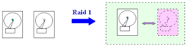
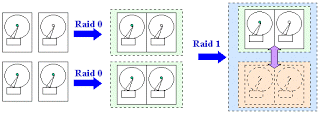
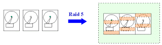
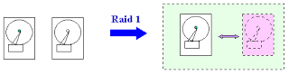
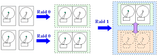
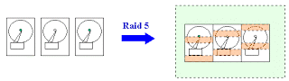

RAID Hakkında Temel Bilgiler
RAID sistemleri, Sunucu bilgisayarlarin kullandigi vazgeçilmez bir sistemdir. Bu yazimizda RAID sistemlerine kısaca bir göz atıp, farklı RAID sistemlerinin nasıl çalistiğina bakacağiz. Bu konu çok genis. Elimden geldigince basitlestirmeye çalistim. Tabii tek seferde anlatilacak konu değil. Ileriki yazilarda bu konu uzayip gidecektir. RAID Nedir? RAID, Redundant Array of Inexpensive Disks teriminin kisaltilmis seklidir, yani 'ucuz ve artıklı sabit disk bataryası' . RAID, sunuculuk yapan sistemlerde, veri güvenligini arttirmak için kullanilmaktadir. RAID; kisa ve öz olarak, birden fazla sabit diskin tek ünite seklinde baglanma metodudur. RAID, bir sabit diskin ya da ayri ayri baglanmis sabit disklerin sundugu veri çikisinin daha genisini sunabilir.
RAID Neden Gereklidir? RAID, bir sabit disk bozuldugu zaman, eş zamanli olarak veri kurtarimini sağlar. Örnegin bu bilgisayar bir ağ üzerinde sunucu ise veri kurtarmanın yanı sıra, sistemin erişilebilirliğini ve ağın sorunsuz çalısmasına devam etmesini sağlar. Birlikte çalışan sabit diskler sistem performansinida arttirmaktadir. Yukaridaki tabloda, en çok kullanilan RAID Sistemlerini kisa açiklamalari verilmistir. Bunlarin açiklamalarini kisaca yapacagiz. Asagida ise RAID sistemlerinin nasil çalistigi görülmektedir.
RAID SISTEMLERI
RAID 0 ( Data Striping )
RAID 0 sistemine göre, bütün sabit diskler tek disk olarak sayilir ve bu disklere bilgiler paylastirilarak yazilir. Dolayisi ile bir veri güvenligi söz konusu degildir. En az 2 diske ihtiyaç vardir.
RAID 1 ( Disk Mirroring )
RAID 1 sistemine göre, bir sabit disk üzerindeki bilgilerin aynisi, diger diskte tutulur. Veri güvenli çok yüksektir. Bir disk arizalandigi zaman, digeri devreye girerek veri kaybini önler ve çalisma devam eder. En az. 2 diske ihtiyaç vardir.
RAID 0 + 1 RAID 0 + 1 sistemi, anlayacaginiz üzere, RAID 0 ve RAID 1 sistemlerinin birlesmesiyle olusmaktadir. Disklere veriler hem paylastirilarak yazilir, hem de disklerin kopyasi ayni sekilde diger disklerde tutulur. En az. 4 diske ihtiyaç vardir. Veri güvenligi fazladir.
RAID 5 RAID 5 sistemine göre, parite, sistemdeki tüm disklere dagitilmistir. En az 3 disk gereklidir. Son Söz Her sabit disk bir gün gelip bozulacaktir. Bunun ne zaman olacagini kestirmek mümkün degil. Hayati bilgiler tasiyan sunucularda RAID sistemlerinin kullanilmasi kaçinilmazdir. Bu yazimizda, temel olarak RAID'in ne oldugundan, ne ise yaradigindan ve ayrintili olmasada nasil çalistiklarini gördük.
Gelecek yazimizda ise, günümüzün sunucu sistemleri için Donanim RAID sistemlerinin mi, yoksa Yazilim Tabanli RAID sistmelerinin mi daha mantikli olacagini tartisip, RAID'in çalisma prensiplerine daha genis bir açidan bakmaya çalisacagiz. Tekrar görüşmek üzere. RAID Terimler Sözlüğü Array : Iki veya daha fazla sabit diskin birleserek, diger bilgisayarlara tek sabit disk gibi gözükmesine verilen addir. Duplexing : Iki RAID kartinini birbirini Mirror etmesidir.
Hot Spare : RAID sistemine dahil olan bir sabit diskin bozulmasi halinde, yerine otomatik olarak gelecek olan ayri bir diske verilen isimdir.
Hot Swap : RAID sistemde, RAID sistemine dahil olan bir sürücünün bozulmasi halinde, sunucuyu kapatmadan ve hiç bir sekilde dokunmadan, bu bozuk diski alip, yerine saglam bir diski takma yetenegine verilen isimdir.
Parity (eşlik) : RAID 5 Sistemi tarafindan kullanilan ve disk dizesindeki bir sabit diskte meydana gelen veri kaybini tekrar en eski haline getirmek için kullanilan bir tür veri kaybi önleme sistemidir. Bu sisteme göre, bazı bit bileşimleri birarada olunca, daha kısa olan başka bir değer ile temsil edilirler; böylece bir derece bilgi kodlanarak saklanmış olur. Eğer veride bozulma olmuş ise, bu eşlik verisine bakarak verinin bir bölümü kurtarılabilir. RAID Sistemleri : RAID sistemleri 0 'dan 5'e kadar olup, veri erisimi, fiyat ve performans gibi konularda farkli alanlarda farkli seçenekleri sunan farkli düzenlemeler ile olusan sistemlerdir. Günümüzde en çok kullanilan RAID sistemleri RAID 0, RAID 1, RAID 0+1 ve RAID 5'dir. RAID terimlerinin açiklamalari için yukariya bakiniz. NOT: RAID sistemleri ile ilgili bölümdeki resimler, Çizgi Elektronik'in web sitesinden alinmistir.Özkan Erden
 




